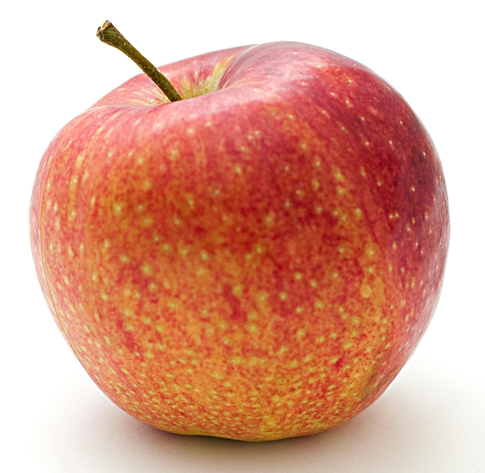
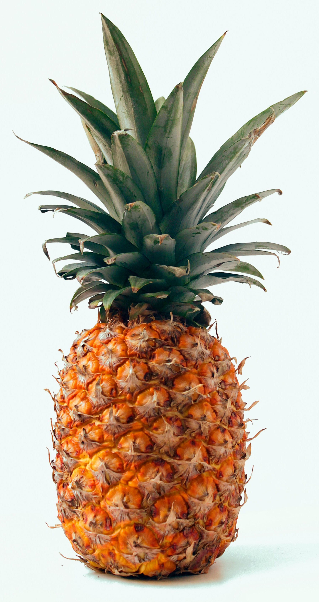
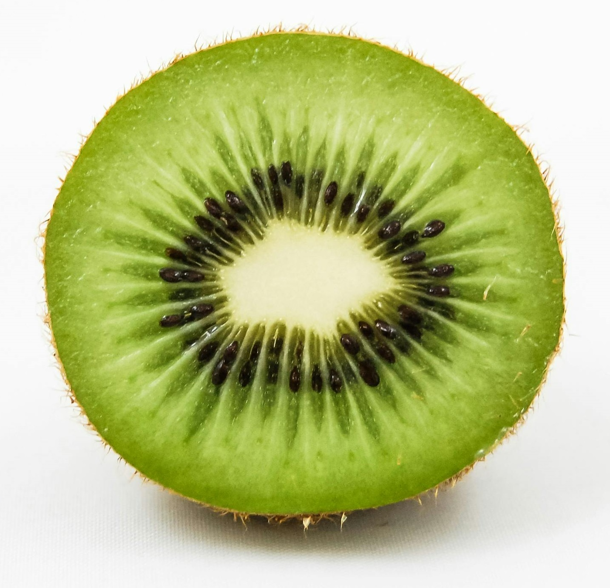
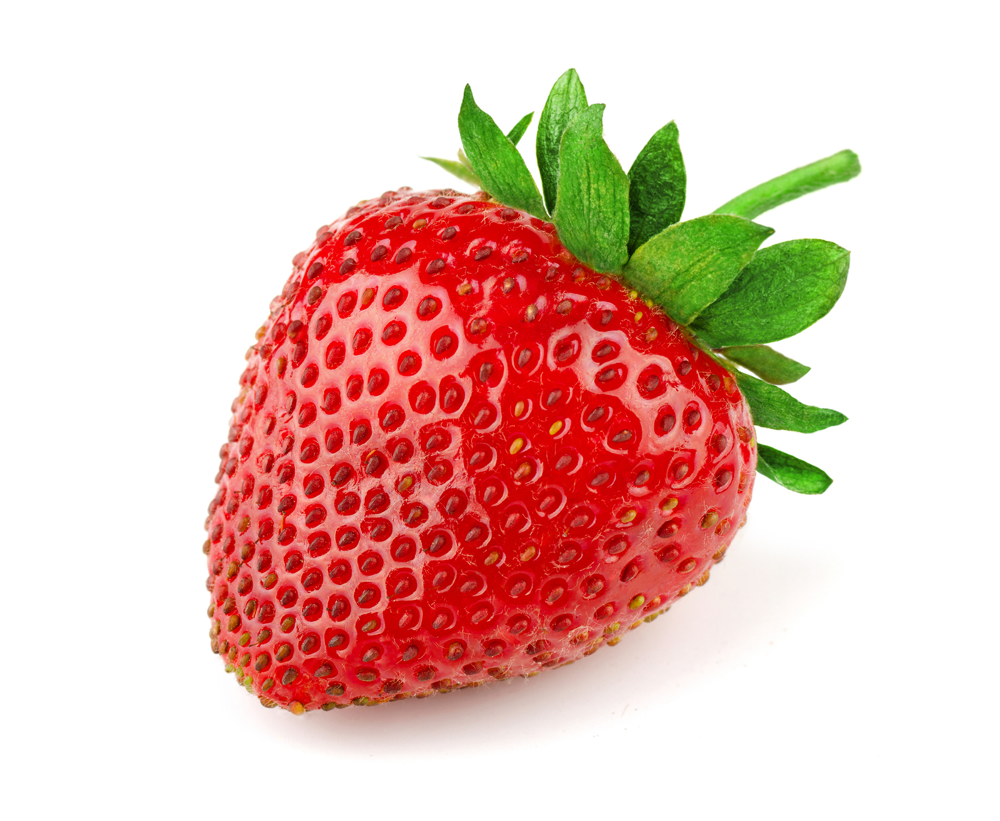

- Apple
Apples are crisp and versatile, come in a spectrum of colors, and flavors from tart to sweet. They're beloved for their crunchy texture and are perfect for snacking, baking into pies, or pressing into cider.
 - Pineapple
Pineapples are tropical and tangy, crowned with a spiky tuft and hide a succulent, golden flesh within. Their sweet-tart taste evokes sunny beaches and is ideal for refreshing juices, grilling, or adding a tropical twist to salads.
 - Kiwi
Kiwis have vibrant green flesh speckled with tiny seeds. They offer a zesty-sweet flavor reminiscent of strawberries and melons, perfect for eating as is or slicing into fruit salads.
 - Strawberry
Strawberries are juicy and fragrant, with a sweet-tart flavor that brightens desserts, salads, or breakfast bowls. Each berry is dotted with tiny seeds and embodies summer's essence in every bite.
 - Banana
Bananas are creamy and mild, and offer a smooth texture and mildly sweet flavor. They're a go-to fruit for quick energy, blending into smoothies, or adding natural sweetness to baked goods.

- Orange
Oranges boast a refreshing juiciness and bright flavor. Their vibrant hue and easy-to-peel skin make them a favorite for snacking, juicing, or incorporating into both sweet and savory dishes.